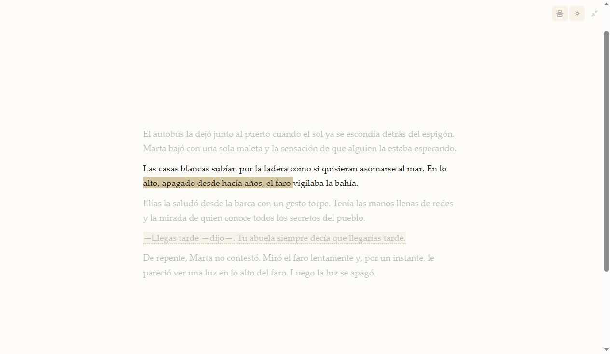

Escribe con calma
Un editor limpio con el formato justo: títulos, cursivas, citas, listas, separadores de escena y sangría de novela. El modo concentración oculta todo menos el texto, con la línea de escritura centrada y el resto atenuado.
- Guardado automático mientras escribes
- Zoom del texto, temas claro, oscuro y sepia
- Buscar y reemplazar en el capítulo o en todo el libro
